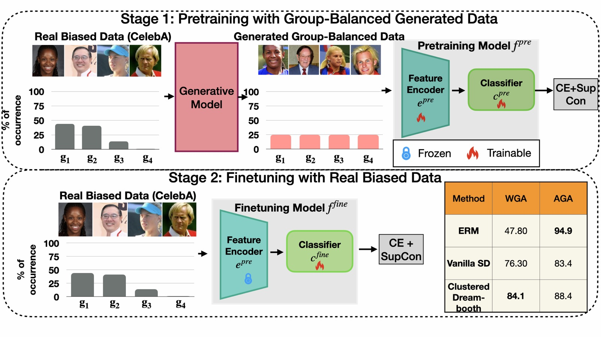
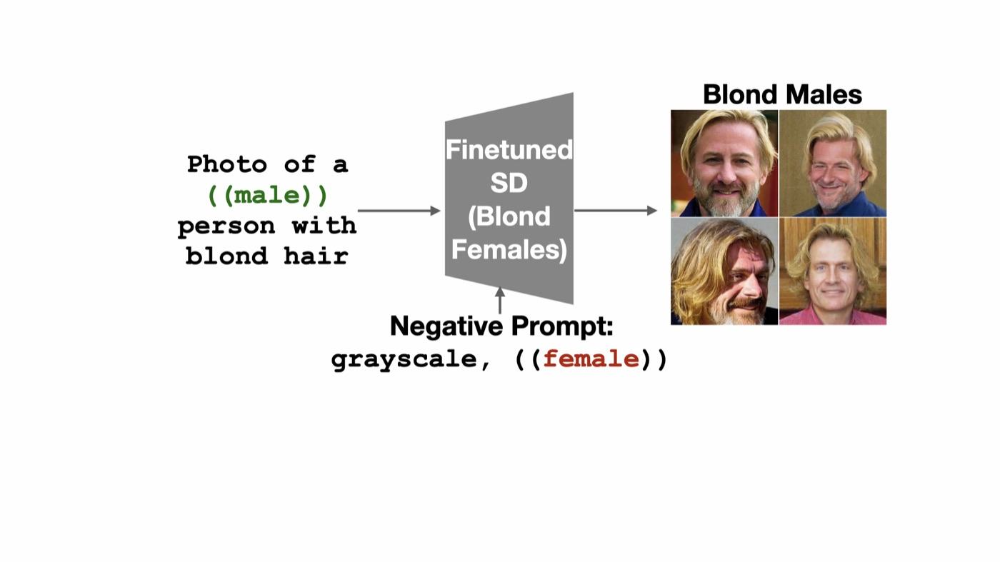
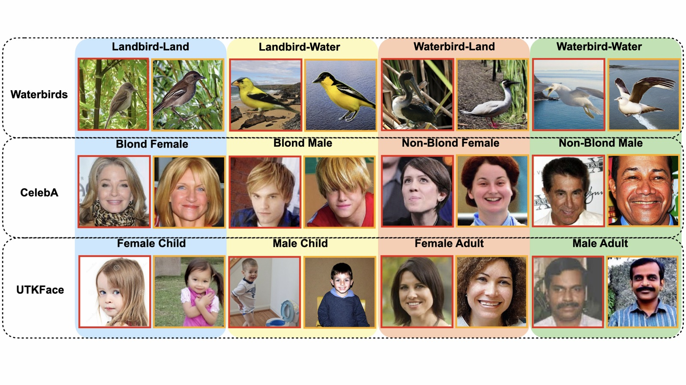
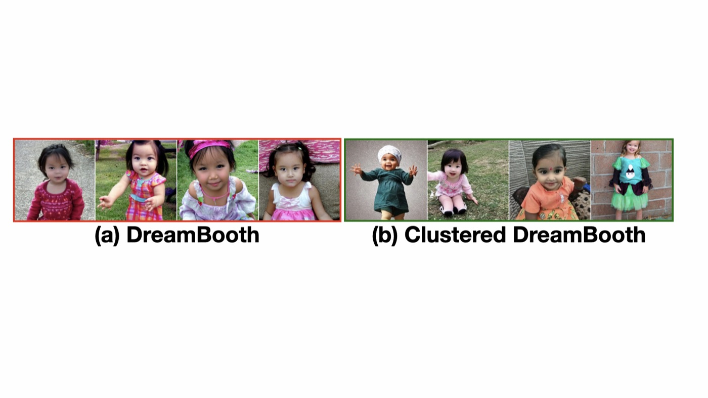

Harnessing Diffusion-Generated Synthetic Images for Fair Image Classification
Fine-tuning Stable Diffusion directly on each biased training group — via LoRA, DreamBooth, and a new Clustered DreamBooth — generates group-balanced synthetic data that trains fairer classifiers than prompt-only generation. Clustered DreamBooth reaches 79.1% worst-group accuracy on average across three benchmarks, beating Group-DRO by up to 60.7 points on Waterbirds once dataset bias becomes severe.

Image classification systems often inherit biases from uneven group representation in training data — e.g. in face datasets for hair-color classification, blond hair may be disproportionately associated with females, reinforcing stereotypes. A recent approach, FFR, leverages Stable Diffusion (SD) to generate balanced training data, but such prompt-only models often struggle to preserve the original data distribution.
We explore multiple diffusion-finetuning techniques — LoRA and DreamBooth — to generate images that more accurately represent each training group by learning directly from its samples. To prevent a single DreamBooth model from being overwhelmed by excessive intra-group variation, we introduce Clustered DreamBooth: clustering images within each group and training a separate DreamBooth model per cluster.
These models generate group-balanced data for pretraining a classifier, which is then fine-tuned on real data. Across three fairness benchmarks, the studied fine-tuning approaches outperform vanilla Stable Diffusion on average, and achieve results comparable to SOTA debiasing techniques like Group-DRO — while surpassing them as dataset bias severity increases.

Four generation strategies
Vanilla SD generates from class + bias labels alone — independent of the training data, so it can drift out-of-distribution. LoRA-finetuning fine-tunes SD on each training group separately, making the generator aware of the data. DreamBooth goes further, binding a group to a unique identifier token (“[V]”) for stronger resemblance to real samples.
Clustered DreamBooth addresses a failure mode of plain DreamBooth: a group like “Blond Male” contains many individuals sharing only one trait. We cluster each group's CLIP embeddings into k subsets and train a separate DreamBooth model per cluster, so no single model is overwhelmed by intra-group variation.
Two-stage training objective
Both the pretraining stage (on generated data) and the fine-tuning stage (on real data) optimize a weighted combination of Cross-Entropy and Supervised Contrastive loss, which sharpens class separation in the learned features.
Evaluated on Waterbirds, CelebA (Blond Hair), and UTKFace (Gender vs. Age), reporting worst-group (WGA) and average-group (AGA) accuracy following prior work.

When we push the bias ratio to 0.999 (99.9% of training images from bias-aligned groups), diffusion models must generate the minority groups largely from scratch. For Vanilla SD and FFR this just means prompting with the bias and class labels. For LoRA, DreamBooth, and Clustered DreamBooth — which rely on training-group images — bias-conflicting samples (e.g. Blond Males in CelebA) are instead generated from the model trained on the corresponding bias-aligned group (Blond Females).
On manual inspection, dropping the learned identifier token during this cross-group generation produces images that visually follow the source group's distribution while depicting the target group — a simple, training-free way to reach severely under-represented groups.
Averaged across all three datasets and both bias ratios: each fine-tuning step buys measurable worst-group accuracy, at the cost of training more per-group diffusion models. Clustered DreamBooth's cluster count kD can be dialed down to trade fidelity for compute — kD=1 recovers plain DreamBooth.
Worst-group (WGA) and average-group (AGA) accuracy on the original dataset and its 0.999 bias-ratio variant. † uses the original authors' codebase; generative methods use no bias annotations besides group balancing.
Clustered DreamBooth achieves the highest worst-group accuracy averaged across all datasets (79.1%). At the 0.999 bias ratio, GDRO and SELF collapse (e.g. 23.5% and 25.5% WGA on Waterbirds) while generative pretraining stays within ∼7% of its original-dataset performance.


This diversity gap explains why plain DreamBooth underperforms on UTKFace (Table 1): with a wide within-group age and background range, a single model averages toward a narrow mode instead of representing the full group.
Clustered DreamBooth's advantage is largest exactly where intra-group variation is highest — facial datasets with varied demographics, lighting, and pose — and smallest on Waterbirds, where DreamBooth already attains the top worst-group accuracy on the original dataset.
CLIP-Score weighting α
α=1 uses only image–text label similarity; α=0 uses only similarity to the group centroid. α=0.5 (used in the main results) balances both and performs best on most datasets, beating unscored random sampling.
Generative pretraining + GDRO fine-tuning
At a 0.999 bias ratio, fine-tuning a Clustered-DreamBooth-pretrained model with the GDRO loss (instead of plain last-layer retraining) lifts worst-group accuracy by +58.3 points on Waterbirds and +37.2 on CelebA over GDRO alone — showing the two approaches are complementary.
We investigated Stable Diffusion fine-tuning — LoRA and DreamBooth — for generating representative, group-balanced training images, and introduced Clustered DreamBooth to address intra-group diversity. Pretraining a classifier on this synthetic data, then fine-tuning only its softmax layer on real data, consistently outperforms vanilla SD and FFR, and matches or exceeds SOTA debiasing methods like Group-DRO — especially as dataset bias becomes severe. Optimizing the cluster count and combining generative pretraining with debiasing losses like GDRO remain open directions.
@inproceedings{basu2026harnessing,
title = {Harnessing Diffusion-Generated Synthetic Images for Fair Image Classification},
author = {Basu, Abhipsa and Gupta, Aviral and Bhat, Abhijnya and Babu, R. Venkatesh},
booktitle = {Proceedings of the AAAI Conference on Artificial Intelligence},
year = {2026},
note = {arXiv:2511.08711}
}